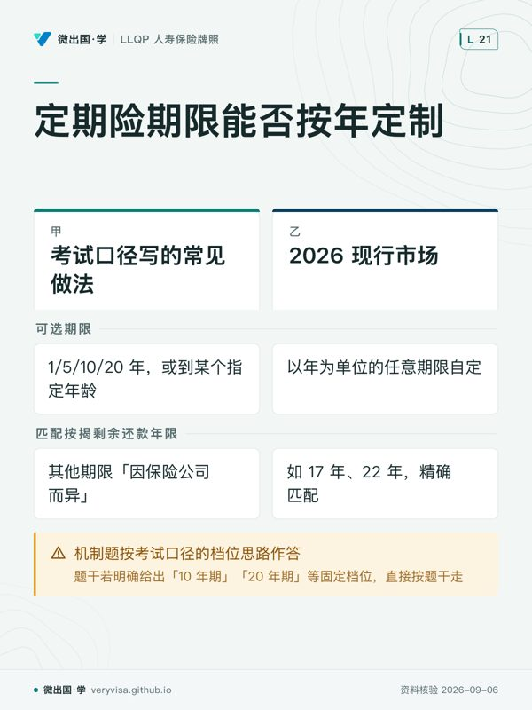

🃏 Flashcards · 3 闪卡 · 3 张 🖼 Slides · 2 幻灯 · 2 页 ✍️ Questions · 7 刷题 · 7 道
人寿保险 Life Insurance P1 必拿分 P1 Must score
ZH EN ZH + EN
先看这一章怎么考 First, how this chapter is tested
合同权利辨析题：给出被保险人健康恶化或保单即将到期的情境，测试能否区分续保权（renewability，到期免核保继续买定期险）与转换权（convertibility，在约定年龄上限前免核保换成永久险）这两项各自独立的合同权利。 Contractual rights distinction questions: Presenting scenarios where the life insured's health deteriorates or the policy is nearing expiry, testing whether candidates can distinguish between renewability (continuing term coverage at expiry without proof of insurability) and convertibility (exchanging for permanent coverage before a specified maximum age without proof of insurability) as two completely separate contractual rights. 转换法律后果题：给出持有多年的可转换定期险在行使转换权后的理赔或撤单争议，测试转换属于原合同权利延续而非退旧买新——免交可保性证明（proof of insurability），且不可抗辩期（incontestability period）与自杀除外条款（suicide exclusion clause）的两年时钟沿用原定期险签发日。 Legal consequences of conversion questions: Presenting claim or policy cancellation disputes after exercising conversion on a convertible term policy held for several years, testing that conversion represents the continuation of existing contractual rights rather than cancelling and reissuing—requiring no proof of insurability, and with the two-year clocks for the incontestability period and suicide exclusion clause running continuously from the original term policy issue date. 转换与续保定价比较题：对比现龄转换（attained-age conversion）与原龄转换（original-age conversion），或对比保证费率续保（renewable with guaranteed rates）与重新核保续保（re-entry term），测试是否理解原龄转换需补缴保费差额及可能利息、重新核保续保对投保人属于单向保护。 Conversion and renewal pricing comparison questions: Comparing attained-age conversion with original-age conversion, or comparing renewability with guaranteed rates with re-entry term, testing whether candidates understand that original-age conversion requires paying the difference in premiums plus possible interest, and that re-entry term provides one-way protection for the policyholder. 最常丢分的陷阱（看到题干信号就警觉） Traps that cost the most marks (watch for the signal in the stem)
混淆续保权与转换权 Confusing renewability with convertibility 题干出现 at expiry / continue temporary coverage 指向续保权（renewability）；出现 permanent coverage / whole life / Term 100 before a maximum age 指向转换权（convertibility）。 The question stem mentions 'at expiry' or 'continue temporary coverage' pointing to renewability; mentions 'permanent coverage', 'whole life', or 'Term 100 before a maximum age' pointing to convertibility. 误认转换会重置两年时钟 Assuming conversion resets the two-year clocks 题干给出原定期险已持有满三年或五年、或还在两年窗口内，询问转换后保险公司能否以转换时未告知体检异常拒赔，或询问自杀除外期从何时起算。 The question stem notes that the original term policy has been in force for three or five years, or remains within the two-year window, and asks whether the insurer can deny a claim for undisclosed medical abnormalities at conversion, or when the suicide exclusion period starts. 盲信原龄转换必然更划算 Blindly assuming original-age conversion is always more cost-effective 题干比较 attained-age conversion 与 original-age / retroactive conversion，选项出现 always results in lower total outlay 或 requires no lump-sum adjustment。 The question stem compares attained-age conversion with original-age or retroactive conversion, and options include 'always results in lower total outlay' or 'requires no lump-sum adjustment'. 本章考点页：导图、要点表、7 道带逐项解析的练习 →
核实日期：2026-09-06｜本页「2026 市场」一节现行产品信息的出处：RBC Insurance 官网（RBC Insurance ）、TD Insurance 官网（TD Insurance ）、Canada Life 官网（Canada Life ）、Canada Life 专页与 BMO 官网（canadalife.com 、bmo.com ）。
复核周期：2027-09-01。定期险的机制长青，但各保司的期限带宽、续保上限年龄、转换年龄上限每年可能微调，建议年度复查一次官网原文。
这一章解决什么问题
你要考的是 人寿保险模块 ，本篇对应 CISRO 能力组件 c2「分析可用产品」，占本模块权重 30%——定期寿险（term life insurance）是这一组件里最基础、也是需求分析中常见的产品形态，几乎每一份需求分析最后都会走到「用定期险还是永久险覆盖这段风险」这个岔路口。
这一篇讲的不是「定期险比永久险便宜」这句常识，而是一份定期险合同里真正决定它值不值的三个开关：续保权（renewability）能不能免核保、转换权（convertibility）能不能免核保转永久险、转换的价格算法是按现在的年龄还是按当年投保的年龄 。这三个开关考试口径写了机制，但没写 2026 年市场上各家公司实际把开关设在哪个位置——而这恰恰是代理人被客户问到「我该选哪一家」时唯一答得上来的部分。
这一篇帮你做到三件事：① 分清续保权与转换权是两项各自独立的合同权利，不是同一件事的两个说法；② 给出任意一份定期险的转换时间点，判断适用现龄转换还是原龄转换、以及不可抗辩期与自杀除外条款要不要重新起算；③ 说出至少三家保司 2026 年的定期险产品线名字、期限带宽与转换年龄上限，知道考试口径写的「常见期限 1/5/10/20 年」在今天的市场上已经不是产品设计的天花板。
一、制度设计与底层逻辑：为什么定期险的合同条款比它的名字复杂得多 本节回答 This section answers 解答续保与转换的权利边界及转换后两年时钟从何时起算 Explaining the boundaries between renewability and convertibility and when the two-year clocks start upon conversion. 本章考题 1 Question 1
1. 它承保的是一段被截断的死亡风险
定期寿险（term life insurance）的合同结构非常单纯：投保人（policyholder）交固定保费，保险公司承诺——如果被保险人（life insured）在约定的期限（term）内身故，就支付一笔身故给付（death benefit）；期限一到，合同自然终止，此前从未有理赔就没有任何退还，这与终身寿险持续累积现金价值（cash value）的设计截然不同。
由此产生第一条底层逻辑：定期险卖的不是「保障」这个抽象概念，卖的是「保障恰好覆盖某一段已知或可估算的时间窗口」 。这段窗口可能是一笔按揭贷款的剩余年限、子女成年前的抚养期、一笔有明确到期日的商业贷款，也可能就是投保人自己设定的一段收入高峰期。考试口径举的按揭配对场景——两位共同借款人投保联合首身故（joint first-to-die）定期险覆盖同一笔按揭——正是这条逻辑最典型的落地：任一人先身故即赔一次，本例只约定一份保额、赔一次；与两张个人单的保障总额及报价须分别比较，因为保险公司只承担「赔一次」的风险，这是共保结构本身省下的钱，不是打折。
投保人（policyholder）与被保险人（life insured）也未必是同一人：企业为员工投保、父母为子女投保，都是投保人拥有合同约定的权利，但变更、解约或转让仍可能受不可撤销受益人、质押及法院命令限制而被保险人只是身故触发理赔的那个人。这条区分在定期险里同样成立，只是因为定期险常见于个人自购场景，容易被误以为两者永远是同一个人。
2. 谁与谁在博弈：保险公司为什么把「免核保」当成一项要单独定价的权利
定期险的期限一到，如果投保人身体状况变差，正常逻辑是保险公司应该趁机重新核保、按新的健康状况定价——这对保险公司最有利。但市场竞争迫使保险公司提供续保权（renewability） ：到期免核保自动续保，只是保费按续保时的年龄重新计算。这项权利对保险公司而言是纯风险敞口——它必须继续承保一个可能已经生病的人，所以可续保定期险的保费天然高于不可续保定期险。
转换权（convertibility） 解决的是另一个完全不同的问题：客户在年轻、保费便宜时买了定期险，但迟早会需要永久保障（遗产规划、企业买卖协议、无法再通过核保买新单的年龄）。可转换定期险（convertible term）允许投保人在约定的年龄上限之前，免核保把定期险转换成永久险（终身险、T-100 或万能寿险）。这项权利同样是保险公司让渡给投保人的一项风险敞口——保险公司承担的是「客户健康转差后仍然接手永久保障」的风险。
ℹ️
续保权与转换权是两件独立的事，不是同一权利的两种说法
一份定期险可以只有续保权没有转换权，也可以只有转换权没有续保权，更多情况下两项权利都写进同一份合同（可续可转，renewable and convertible term）。判断题干时先问「它问的是到期后继续买定期险，还是到期后换成永久险」，这是两个完全不同的机制，各自有各自的年龄上限。
3. 法律后果：转换不是重新投保，而是原合同权利的延续
这一点是本章最容易被忽视、也最常被考的机制：行使转换权时，保险公司不得要求任何新的可保性证明（proof of insurability） ，这不是「保险公司愿意通融」，而是合同签发时就已经写进条款的一项确定权利，客户健康状况在这段时间内的任何变化都不影响转换的成立。同时，转换后的永久险合同沿用原定期险合同的签发日期来起算不可抗辩期（incontestability period）与自杀除外条款（suicide exclusion clause）的时钟——如果原定期险已经过了两年，转换后的永久险不会重新进入两年不可抗辩期；如果原定期险还在两年窗口内，剩余的时间会带入新合同继续计算，不会因为「换了一份新合同」就从零重新起算。
✕
把「转换」误当成「退旧买新」是执业事故
一旦把转换权处理成退保后重新投保一份永久险，客户就会被要求重新核保、重新起算两年不可抗辩期与自杀除外期——这直接剥夺了客户当初买可转换定期险所付的那部分溢价想要买到的东西。转换权的价值全部在于免核保 + 时钟不清零 这两点,一旦操作错误，两点都会落空。
节末检索小测 · 先别往回翻，凭记忆作答 Quick recall check: answer from memory before scrolling back
Three years ago, Clara purchased a 10-year convertible term life insurance policy. Shortly after exercising her conversion privilege to switch to a permanent policy, the insurer discovers an unintentional error on her original application that does not constitute fraud. How is the incontestability period applied to Clara's new permanent policy?
三年前，Clara 购买了一份 10 年期可转换定期寿险保单。在她行使转换权换成永久险后不久，保险公司发现她最初投保申请表上有一处不构成欺诈的无心错误。不可抗辩期在 Clara 的新永久险保单上如何适用？
a A new two-year incontestability period begins on the date the permanent policy is issued, so the insurer can still contest the error. ✗ 误触「误认转换会重置两年时钟」陷阱。行使转换权（convertibility）是原合同权利的延续而非退旧买新，不可抗辩期（incontestability period）不会在永久险签发日重新起算两年。 Falls into the 'assuming conversion resets the two-year clocks' trap. Exercising convertibility continues existing contractual rights rather than replacing a policy, so the incontestability period does not restart for two years upon permanent policy issue.
b The incontestability period runs from the original term policy's issue date and has already expired after three years. ✓ 正确。行使转换权（convertibility）时，永久险沿用原定期寿险（term life insurance）的签发日期起算两年不可抗辩期（incontestability period）与自杀除外条款（suicide exclusion clause）；原保单已满三年，两年不可抗辩期早已届满。 Correct. Upon exercising convertibility, the permanent policy continues the two-year clocks for the incontestability period and suicide exclusion clause from the original term policy issue date; because the original policy has been in force for three years, the two-year incontestability period has already expired.
c The insurer may require new proof of insurability from Clara before it honours the incontestability protection on the new policy. ✗ 违反转换权的核心法律后果。只要在合同约定的转换窗口内行使转换权，保险公司不得要求任何新的可保性证明（proof of insurability）。 Violates the core legal effect of convertibility. As long as conversion is exercised within the contractual window, the insurer cannot demand any new proof of insurability.
d The incontestability clock is extended by one additional year whenever a term policy is converted. ✗ 虚构规则。不可抗辩期（incontestability period）固定沿用原定期险合同的签发日起算两年，不存在因转换而延长一年的规则。 Fabricates a non-existent rule. The incontestability period runs for two years from the original term policy issue date, and no rule exists extending the clock by an additional year upon conversion.
看答案与每个选项的解析 Show the answer and why each option is right or wrong 答案 Answer ：b
二、2026 现行政策与数字：期限、续保定价与转换的两种算法 本节回答 This section answers 解答保证费率续保与重新核保续保的区别及两种转换算法 Explaining differences between guaranteed-rate renewal and re-entry renewal as well as the two conversion pricing methods. 本章考题 2 Question 2
1. 期限本身不是法律规定的，是行业惯例
考试口径列出的常见期限——1 年、5 年、10 年、20 年，或到某个指定年龄（如到 60 岁）——从来不是法律或监管规定的清单，只是保险公司过去几十年沿用的行业惯例分档。这一点在第四节「2026 市场」会看到直接冲击：现在多家主流保司已经不再把客户限制在这几个固定档位里。
2. 续保定价：保证费率续保 vs 重新核保续保
续保条款（renewal provisions）在实务中分两条路：保证费率续保（renewable with guaranteed rates） ——签发时就把整张续保费率表写进合同，客户到期直接按表上的年龄对应费率续保，无论健康状况如何都不受影响；重新核保续保（re-entry term）——到期时如果客户重新提交健康声明并通过核保，可以按更低的「重新核保费率表」续保，健康状况变差或拒绝重新核保的，仍然可以按保证费率表续保，不会被拒绝，只是费率更高。这条设计对客户永远是单向保护：重新核保只能让费率变得更便宜，不会让已经拥有的续保权利消失。
3. 转换的两种定价算法：现龄转换 vs 原龄转换
这是本章计算量最大的一个机制，也是考试口径原龄转换（original-age conversion）案例的核心：
现龄转换（attained-age conversion） ：转换时的永久险保费按被保险人转换那一刻的年龄计算——年龄越大，永久险保费越贵，但转换当下不需要额外补一笔钱，是市场上绝大多数保单的默认设计。
原龄转换（original-age conversion，也称追溯转换 retroactive conversion） ：转换后的永久险保费按被保险人最初投保定期险时的年龄计算——这个年龄更年轻，永久险保费自然更低，但保险公司会要求投保人一次性补缴一笔差价，算法因保单而异：可能是「假设投保人从一开始就买永久险、这些年应缴保费与实际已缴定期险保费之间的差额」，也可能是「假设从一开始买永久险到现在应该累积的现金价值」。无论哪种算法，这笔一次性补缴金额都可能相当可观——可否采用原龄转换、允许的年限及补款方式均按合同；Canada Life 现行页仍列此选项。应把补款、利息和未来保费合并比较，不能只凭低龄费率判断划算。
⚠️
「原龄转换保费更低」不等于「原龄转换更划算」
原龄转换的永久险保费确实更低，但换来这份低保费的代价是一笔可能很大的一次性补缴款，而且原龄可转换定期险本身在投保之初的定期险保费，就已经比现龄可转换定期险更贵——保险公司承担了「未来可能要按更低费率提供终身保障」的风险，这份风险从一开始就体现在保费里了。选项设计里常见的陷阱是只比较转换后的永久险保费高低，而不考虑补缴款与前期溢价，三笔账合在一起看，原龄转换未必是划算的选择。
考场与现行对照表之一：考试口径的固定期限档位 vs 2026 现行的按年定制
节末检索小测 · 先别往回翻，凭记忆作答 Quick recall check: answer from memory before scrolling back
Owen holds a 10-year term life policy with a re-entry renewal provision. As the 10-year term approaches expiry, Owen develops a health condition and fails the medical underwriting required for the preferred re-entry rates. What happens to Owen's coverage at renewal?
Owen 持有一份带有重新核保续保条款的 10 年期定期寿险。当 10 年期临近届满时，Owen 出现健康问题，未能通过获取优惠重核费率所需的医学核保。续保时 Owen 的保障会怎样？
a He can still renew the policy without medical qualification at the contract's higher guaranteed renewal rates. ✓ 正确。重新核保续保（re-entry term）对投保人是单向保护：通过核保可享更低的重核费率，若健康转差未通过或拒绝重新核保，仍可按合同写明的保证费率表（renewable with guaranteed rates）续保，只是费率更高。 Correct. Re-entry term provides one-way protection for the policyholder: passing medical underwriting qualifies the insured for lower re-entry rates, but if health deteriorates or underwriting is declined, the policyholder can still renew at the contractually guaranteed renewal rates, albeit at a higher premium.
b The insurer will decline the renewal and terminate his temporary coverage at the end of the 10-year term. ✗ 混淆了不可续保定期险与重新核保续保（re-entry term）。重新核保失败不会剥夺原本写进合同的保证费率续保权（renewability）。 Confuses non-renewable term with re-entry term. Failing re-entry underwriting does not forfeit the contractually guaranteed right of renewal.
c He must immediately exercise an original-age conversion and pay a retroactive lump-sum premium difference. ✗ 误触「混淆续保权与转换权」陷阱。题干问的是期满续保条款（renewal provisions），而非强制行使原龄转换（original-age conversion）。 Falls into the 'confusing renewability with convertibility' trap. The question focuses on renewal provisions at expiry rather than mandating original-age conversion.
d His renewal premium remains locked at the original issue-age rate because his health change was involuntary. ✗ 误解续保定价规则。无论采用哪种续保方式，定期寿险续保时的保费均按续保当时的年龄重新计算，不可能维持最初投保年龄的原费率。 Misunderstands renewal pricing rules. Regardless of the renewal method, term insurance renewal premiums are recalculated based on attained age at renewal, and cannot maintain the original rate from the initial issue age.
看答案与每个选项的解析 Show the answer and why each option is right or wrong 答案 Answer ：a
三、实务流程：从选期限到行使转换权，代理人在每一步做什么 本节回答 This section answers 解答平额与递减保额匹配及个人定期险与银行按揭险差异 Explaining level versus decreasing coverage matching and differences between individual term and lender mortgage insurance. 本章考题 3 Question 3
1. 需求分析阶段：把「已知的时间窗口」量出来，而不是先选产品
代理人的第一步工作不是问客户「你要 10 年还是 20 年」，而是先量出客户面对的风险到底会持续多久：一笔按揭还有多少年还清、子女到独立生活还有多少年、一份有明确到期日的商业贷款还剩几年。量出这个数字之后，才回头去匹配市场上现有的期限选项——如果某家保司只提供固定档位而客户的实际需求是 17 年，代理人就要在「多付几年保费换标准档位」与「转去提供按年定制的保司」之间给出建议，这正是第四节要落到实务的地方。
2. 保额形态的选择：跟着风险的形状走，不是跟着习惯走
死亡给付（death benefit）在定期险里有三种形态：平额（level） ——保额从头到尾不变，最常见，适合抚养费、遗产规划等不随时间递减的需求；递减（decreasing）——保额随时间下降，最常见的应用就是覆盖一笔按揭贷款，因为按揭余额本身逐年下降，用递减定期险覆盖比平额定期险更省保费；递增（increasing）——保额随时间上升，用于覆盖会随通胀或收入增长而扩大的责任缺口，这类产品在加拿大市场并不常见，代理人遇到这类需求时通常改用附加险（rider）或分批追加平额保单来实现类似效果。
🔧
按揭寿险要分清保额、保费和受益人
FCAC 说明：按揭寿险通常随贷款余额减少而减少保额，保费却一般保持不变，赔款付给贷款人（canada.ca（论坛解读） ）。个人平额定期险则可由保单持有人选择保额与受益人，受益人可把款项用于还贷或其他需要。两者均须核承保条件、除外责任和终止条款；不能一概说银行只在理赔时核保，也不能把个人“递减”险说成保额固定。
3. 转换权的行使窗口：客户一提离职、体检异常，当天就要核
转换权最大的价值在于免核保 ，所以它最该被用在客户健康状况开始变差、或即将失去核保资格的那一刻——而不是等到转换年龄上限快到了才想起来。代理人在日常维护客户关系时，一旦听到客户提及新诊断、家族病史变化，第一反应应该是核对这份定期险的转换权还剩多少年、行使窗口是否临近，而不是等客户自己想起来问。
考场与现行对照表之二：转换年龄上限，考试口径的通则 vs 各公司的具体年龄
节末检索小测 · 先别往回翻，凭记忆作答 Quick recall check: answer from memory before scrolling back
Hannah and Lucas are comparing a lender's mortgage life insurance policy with an individual decreasing term life insurance policy to cover their amortizing home loan. Which statement accurately describes how the two options work?
Hannah 和 Lucas 正在比较贷款机构的按揭寿险与个人递减定期寿险，以覆盖他们逐年摊还的房贷。下列哪项陈述准确描述了这两种方式的运作机制？
a In an individual decreasing term policy, both the death benefit and the periodic premium go down every year in line with the loan. ✗ 误触「误认递减定期险保费随保额递减」陷阱。个人递减定期险（decreasing term）的保额随时间下降，但保费在合同期内通常保持固定不变。 Falls into the 'assuming decreasing term premiums decrease alongside coverage' trap. The face amount of an individual decreasing term policy decreases over time, but premiums typically remain level throughout the contract term.
b Under the lender's mortgage insurance, the borrower can freely name any family member to receive the proceeds instead of the lender. ✗ 混淆了贷款人按揭寿险与个人保单。贷款机构按揭寿险的赔款固定支付给贷款人（lender）用于清偿剩余贷款，不能由客户自由指定家属为受益人。 Confuses lender mortgage insurance with individual policies. Proceeds from lender mortgage insurance are paid directly to the lender to discharge the remaining mortgage, and borrowers cannot freely name family members as beneficiaries.
c Both the lender's mortgage policy and individual decreasing term typically keep a level premium while the coverage amount declines. ✓ 正确。无论是贷款机构销售的按揭寿险还是个人递减定期寿险（decreasing term），虽然身故给付（death benefit）随时间或贷款余额减少而下降，但合同期内的保费通常都保持不变。 Correct. In both lender mortgage insurance and individual decreasing term policies, although the death benefit decreases over time as the loan balance declines, premiums across the term typically remain level.
d Lender mortgage insurance is never subject to underwriting conditions, exclusions, or termination rules. ✗ 违反实务核查原则。贷款机构按揭寿险同样有承保问卷、除外责任和终止条款，必须核查具体保险证书，不能一概假定毫无核保与除外限制。 Violates the practical verification principle. Lender mortgage insurance also features underwriting questionnaires, exclusions, and termination provisions; one must review the specific certificate of insurance rather than assuming zero underwriting or exclusions.
看答案与每个选项的解析 Show the answer and why each option is right or wrong 答案 Answer ：c
四、2026 市场：谁在卖、产品叫什么、柜台怎么说 本节回答 This section answers 解答按年定制期限、首期固定期满逐年续保与保障终止年龄 Explaining annually customized terms, initial level premiums with annual renewals, and coverage termination ages.
本节只写已回源核实的产品线，promo 折扣价格不写，只写机制与条款。
1. RBC Insurance —— YourTerm：把「按年定制」做成产品名的卖点
RBC 官网确认的定期险产品线是 RBC YourTerm （另有面向小额度、简化承保场景的 RBC Simplified Term）。YourTerm 明确写出可以「选择 10、15、20 或 40 年（以及两者之间的任意年数）」，转换为永久险或万能寿险的年龄上限是71 岁生日前、免核保，期满后可自动续保直至被保险人100 岁（RBC Insurance ）。
它解决考试口径里哪个概念：它直接打破了考试口径「常见期限 1/5/10/20 年」的档位假设 ——YourTerm 把「精确匹配一笔按揭剩余还款年限」从代理人手工凑档位的动作，变成了产品说明书上明写的卖点。
2. TD Insurance —— 三档固定期限，且官网数字更正了一处二手源的误差
TD 官网提供三档固定期限：10 年、20 年、30 年定期险，加上 Term 100 永久险选项；三档定期险的保障最迟都在被保险人80 岁 终止；转换为 Term 100 永久险的窗口是69 岁生日后 6 个月内（TD Insurance ）。
它解决考试口径里哪个概念：TD 是考试口径描述的「固定档位」思路在 2026 年市场上的活样本，用来和 RBC 的「按年定制」形成直接对照。TD 的窗口是 69 岁生日后 6 个月内，不能约写成 70 岁；购买或转换时须以合同精确截止日为准。
3. Canada Life —— My Term：首期固定，期满后逐年续保
Canada Life 官网确认 My Term™ 可选择 5–50 年首期；在不变更保单的前提下，首期保费固定。首期期满后才逐年自动续保、保费每年增加，至最接近 85 岁生日的保单周年日。官方页同时列出至 70 岁转永久险，以及符合条件的原龄转换（须补保费差额和利息）；具体资格及截止日须查合同（canadalife.com ）。
图：四家定期险产品期限——2026 市场既有固定档位，也有按年定制
它说明“首期保费”与“期满续保费率”是两段安排。比较产品时应把两段保证费率表分别拿出来，既不要把续保涨价说成首期年年涨，也不要以为首期固定就代表终身固定。
4. BMO Insurance —— 有续保选项，仍有保障终止年龄
BMO 的 Term Life 官方页列出 10、15、20、25、30 年期及续保选项，保障于 85 岁终止；脚注另列 71 岁前转换合资格永久险的权利（bmo.com ）。续保权与保障终止年龄可以同时存在，不能把最终到期误解为从一开始就无续保权。
Assumption Life 的 FlexTerm 2022 年官方公告曾列续保至 90 岁、转换至 75 岁；本页未取得现行签发合同，因此不把历史公告数值列作 2026 报价条件。需要该产品时，先向保险人取得当前产品说明和适用合同。
ℹ️
产品示例的适用范围
当前产品页不自动适用于历史签发保单。报价、转换和续保前应取得所持保单版本及书面费率表；未列产品与促销费率不作比较。
节末检索小测 · 先别往回翻，凭记忆作答 Quick recall check: answer from memory before scrolling back
An insurer offers a term life product where the policyholder selects an initial term between 5 and 50 years with a guaranteed level premium, followed at expiry by automatic yearly renewals with annually increasing premiums up to the policy anniversary nearest age 85. How should an agent explain the premium structure of this contract?
某保险公司提供一款定期寿险产品，投保人可选择 5 至 50 年的首期并享有固定保证保费，首期届满后每年自动续保且保费逐年递增，直至最接近 85 岁生日的保单周年日。代理人应如何解释该合同的保费结构？
a The level premium applies only during the chosen initial term; the yearly renewals after it follow a separate, rising rate table. ✓ 正确。首期固定保费（level term premium）与期满后的逐年续保费率（renewal rates）是两段独立安排：既不能把期满后的逐年涨价说成首期年年涨，也不能把首期保费固定误当成终身固定。 Correct. Initial level term premiums and subsequent yearly renewal rates are two distinct stages: one cannot describe post-expiry annual increases as applying during the initial term, nor assume initial level premiums remain fixed for life.
b Because the policy terminates at age 85, the contract cannot include any renewability privilege at the end of the selected initial term. ✗ 混淆了续保权（renewability）与保障终止年龄。保单设有 85 岁保障终止年龄与首期期满后享有自动续保权可以同时存在。 Confuses renewability with policy termination age. A policy having a coverage termination age of 85 coexists with automatic annual renewal rights once the initial term expires.
c The policyholder's premium will increase every single year starting from the second policy anniversary, even within the initial term. ✗ 混淆了首期与续保期。在不变更保单的前提下，所选首期内的保费是固定的，只有首期期满进入逐年自动续保阶段后保费才会每年增加。 Confuses the initial term with the renewal period. Without altering coverage, premiums during the selected initial term remain fixed, and only increase annually once entering the automatic annual renewal phase after initial term expiry.
d The guaranteed initial premium remains locked in until age 85 as long as the insured does not change coverage. ✗ 误把首期保费固定当成直至保障终止年龄都固定。首期期满后按续保年龄逐年递增，只有选定首期内保费不变。 Mistakenly assumes initial level premiums remain fixed until policy termination age. Premiums increase annually based on attained age after the initial term expires, remaining level only within the selected initial term.
看答案与每个选项的解析 Show the answer and why each option is right or wrong 答案 Answer ：a
五、历史变革：从「固定几档」到「按年定制」，变的是什么 本节回答 This section answers 解答为什么考试写固定档位而现行市场支持按年定制期限 Explaining why exams feature fixed term bands while the modern market supports annually customized terms.
节末检索小测 · 先别往回翻，凭记忆作答 Quick recall check: answer from memory before scrolling back
Historically, insurers offered term life insurance mainly in standardized blocks such as 1, 5, 10, or 20 years, whereas several insurers now allow clients to customize exact term lengths by the year. Which aspect of term life insurance has remained unchanged despite this product evolution?
历史上，保险公司主要按 1 年、5 年、10 年或 20 年等标准化档位提供定期寿险，而现在多家保司允许客户按年自定精确期限。尽管产品设计发生了这一演变，定期寿险的哪一项机制始终保持不变？
a Statutory law still mandates that only 1, 5, 10 and 20-year term lengths are legally valid, so custom terms are a regulatory exception. ✗ 误把行业惯例当成法律强制规定。1/5/10/20 年从来只是保险公司沿用的行业惯例（industry practice），并非法律或监管规定的清单。 Mistakes industry conventions for statutory mandates. Traditional bands of 1, 5, 10, or 20 years have always been industry practice rather than a legally or regulatorily mandated list.
b Conversion privileges still restart the two-year suicide exclusion period whenever the client has chosen a custom-length term. ✗ 误触「误认转换会重置两年时钟」陷阱。无论期限档位如何设计，转换后自杀除外条款（suicide exclusion clause）均沿用原合同签发日起算。 Falls into the 'assuming conversion resets the two-year clocks' trap. Regardless of how the term length is designed, the suicide exclusion clause continues from the original contract issue date upon conversion.
c All insurers now apply one uniform national cutoff age of 70 for exercising a term conversion privilege, whatever the product. ✗ 违反转换年龄因保司而异的原则。不论过去还是现在，转换年龄上限均因保险公司及具体合同条款而异，不存在全国统一固定数字。 Violates the principle that conversion age limits vary by insurer. Both historically and currently, maximum conversion ages vary by insurer and contract wording, and no uniform national statutory figure exists.
d Renewability and convertibility are still separate rights, and a conversion still keeps the original issue date for the two-year clauses. ✓ 正确。无论产品期限从固定几档演变为按年定制，续保权（renewability）与转换权（convertibility）作为两项独立权利、以及转换沿用原签发日起算不可抗辩期（incontestability period）与自杀除外条款这两项底层合同法原则始终未变。 Correct. Regardless of product terms evolving from fixed bands into annually customized durations, the fundamental contract law principles remain unchanged: renewability and convertibility are independent rights, and conversion carries forward the original issue date for both the incontestability period and suicide exclusion clause.
看答案与每个选项的解析 Show the answer and why each option is right or wrong 答案 Answer ：d
六、案例：三个 BC 场景 本节回答 This section answers 解答精确匹配按揭年限、体检异常即刻转换与离婚保单归属 Explaining exact mortgage amortization matching, converting immediately upon medical abnormalities, and post-divorce policy ownership. 本章考题 4 Question 4
案例一：素里的 Marcus 想用一张保单精确覆盖 17 年的按揭（示例）
情景 ：Marcus 在素里刚办了一笔按揭，剩余还款年限精确算下来是 17 年。他咨询了一家只提供 10 年、20 年两档定期险的保司，代理人建议他买 20 年期以「留有余量」。
适用规则 ：20 年期比 17 年期每年多付三年的保费，这笔多付的保费本可以完全避免——按年定制的定期险产品（如 RBC YourTerm）允许精确按 17 年投保，不需要在「10 年不够、20 年多余」之间二选一。
结果 ：如果 Marcus 的代理人所在的保司恰好也提供按年定制，应直接推荐 17 年期；如果不提供，代理人有责任告知客户市场上存在更精确匹配的选项，由客户自己权衡是否值得换一家保司投保。
常见错法 ：把「只提供固定档位」当成整个市场的现状，想当然地推荐「就近取整、宁多勿少」，而不主动了解市场上是否有更贴合客户实际需求的产品线。
案例二：温哥华的 Priya 三年前买了可转换定期险，现在查出甲状腺结节（示例）
情景 ：Priya 三年前购买一份 10 年期可转换定期险，转换权窗口是投保人 65 岁前。她今年体检查出甲状腺结节，医生建议进一步检查，她担心以后买不到新的保险。
适用规则 ：只要 Priya 现在选择行使转换权，把这份定期险转换成永久险，保险公司不得因为她今年的体检结果要求任何新的可保性证明——转换权的核保豁免与她现在的健康状况无关，只与「她是否在窗口期内提出转换」有关。她不需要等到确诊或病情恶化才行动，越早行使转换权，越不会被「以后可能核保更严格」的顾虑绑住。
结果 ：Priya 应尽快联系代理人行使转换权，把定期险转换为永久险；这个动作与她的体检结果、医生的进一步检查安排都无关，也不需要等检查结果出来再决定。
常见错法 ：以为转换权像新投保一样，要等身体状况「确认没问题」才能顺利转换——恰恰相反，转换权存在的意义就是让客户不必依赖「身体没问题」这个前提。
案例三：列治文的 David 想知道离婚后能不能把定期险转给现在的伴侣（示例）
情景 ：David 五年前为当时的配偶购买了一份联合首身故（joint first-to-die）定期险覆盖共同房贷，两人已离婚，David 想知道这份保单现在算谁的、能不能把受益人换成现在的伴侣。
适用规则 ：联合首身故保单以两人的生命为承保对象，离婚不会自动终止这份保单，但保单的受益人指定与投保人身份是独立于婚姻状态的两件事——具体能不能变更受益人、能否在双方仍在世时按合同分拆保障或另为新伴侣投保，取决于保单本身的条款设计与投保人身份，而不是简单地因为「离婚了」就自动调整。
结果 ：David 需要先确认自己在这份保单里是不是投保人，以及是否受不可撤销受益人、质押或家庭法院命令限制，再决定下一步；如果他不是投保人（例如当初是前配偶名下投保），他对这份保单没有变更权，需要考虑重新为自己和新伴侣单独投保。
常见错法 ：把「联合首身故」理解成两人共同拥有、共同决定的保单，忽略了投保人身份才是决定谁能变更保单条款的关键，这一点和婚姻关系的变化是两条并行但不互相决定的线。
节末检索小测 · 先别往回翻，凭记忆作答 Quick recall check: answer from memory before scrolling back
Nora has a mortgage with exactly 17 years remaining. The first insurer she approaches only offers fixed 10-year and 20-year term policies, while other insurers in the market offer customizable year-by-year term lengths. What is the implication of choosing a 20-year fixed term instead of a customizable 17-year term?
Nora 有一笔剩余还款期恰好为 17 年的按揭贷款。她咨询的第一家保司只提供 10 年和 20 年两档固定期限，而市场上其他保司提供按年定制期限的产品。选择 20 年固定期限而非按年定制的 17 年期限意味着什么？
a Choosing the 20-year term is required by regulation because 17-year term contracts are not permitted under standard rules. ✗ 误把考试口径列举的常见档位（1/5/10/20 年）当成监管限制。考试口径按题干档位作答，但实务中固定档位只是行业惯例而非监管禁令。 Mistakes exam-tested traditional bands (1, 5, 10, 20 years) for regulatory prohibitions. Candidates answer exam questions using given bands, but in practice, fixed bands are industry conventions rather than regulatory bans.
b A 20-year term forces Nora to pay for three extra years of coverage beyond her known mortgage liability window. ✓ 正确。考试口径虽常以 10/20 年固定档位设题，但实务中 20 年期比 17 年期多出三年的保障与保费支出；按年定制定期险（term life insurance）可精确覆盖 17 年负债窗口，避免多付三年保费。 Correct. Although exams frequently test 10- or 20-year fixed bands, in practice a 20-year term involves paying three additional years of coverage and premiums; an annually customized term policy precisely covers the 17-year debt window, avoiding paying three years of unnecessary premium.
c A 17-year custom term policy automatically forfeits the right to name a personal beneficiary. ✗ 混淆了个人定期寿险与贷款机构按揭寿险。按年定制的个人定期险依然由投保人（policyholder）自主指定受益人。 Confuses individual term life insurance with lender mortgage insurance. An annually customized individual term policy still permits the policyholder to freely designate personal beneficiaries.
d The 20-year policy will automatically refund the last three years of premiums once the mortgage is paid off in year 17. ✗ 违反定期寿险无退还的基本结构。定期寿险（term life insurance）不累积现金价值（cash value），未发生理赔或提前不再需要保障时不会退还已缴保费。 Violates the fundamental structure of term life insurance having no refunds. Term insurance accumulates no cash value, and never refunds premiums paid if no claim occurs or if coverage is no longer needed early.
看答案与每个选项的解析 Show the answer and why each option is right or wrong 答案 Answer ：b
七、考试陷阱与考场与现行对照清单 本节回答 This section answers 解答考场按题干档位与年龄作答、柜台核查原合同的双口径 Explaining the dual-benchmark approach of answering exam questions using given contract terms versus verifying original policies in practice.
陷阱一：把续保权与转换权当成同一件事。 识别——续保是「到期免核保继续买一份定期险」，转换是「到期前免核保换成一份永久险」，题干里出现「到期后…」通常在问续保，出现「换成终身险/万能寿险」通常在问转换，两者的年龄上限、费率算法完全独立，不能互相替代作答。
陷阱二：认为原龄转换永远比现龄转换划算。 识别——原龄转换的永久险保费更低，但需要一次性补缴一笔可能很大的差价，且原龄可转换定期险本身在投保时的保费就比现龄可转换定期险更贵，三笔账合在一起看才能判断是否划算，只看转换后保费高低是不完整的比较。
陷阱三：以为转换会重新起算不可抗辩期与自杀除外条款。 识别——转换沿用原定期险合同的签发日期起算这两项条款的时钟，不会因为换成永久险合同就清零重新算两年，题干若问「转换后多久内保险公司还能因重大事实错误撤单」，要看的是原合同的签发日期，不是转换发生的日期。
陷阱四：把递减定期险当成保费不变的产品。 识别——递减定期险的保额随时间下降，保费通常在合同期内保持不变（不是保额和保费同步下降），因为保险公司在定价时已经把整段期限内平均的风险敞口算进了固定保费里；题干若问「递减定期险的保费会不会跟着保额一起下降」，多数常规产品设计的答案是不会。
陷阱五：把「因保险公司而异」当成考试口径没讲清楚，而不是一个需要另外核实的现行事实。 识别——考试口径明确说明期限档位、转换年龄「因保险公司而异」，这不是考试口径的疏漏，而是提示读者这类数字必须回具体保司当前的产品条款核实，不能背一个全国统一的数字；本页列出的 TD 69 岁后 6 个月、RBC 71 岁前、Canada Life 至 70 岁等窗口属于各自产品条件，不能互换使用。
陷阱六：把银行推销的按揭险等同于个人定期险。 识别——贷款人销售的按揭寿险通常按剩余贷款债务给付，承保问卷、转贷和终止条件须查保险证书；题干如果问「与个人递减定期险相比，银行按揭险的受益人是谁、保障是否可携带」，正确方向是银行按揭险受益人固定为银行且不可携带，这与个人保单的可携带性、受益人可自定完全不同。
考场与现行对照清单（考场答什么 / 柜台做什么）
本节对应的练习题共 52，按三层难度分布：概念辨析（第一层）、考试口径通则与 2026 现行值双口径及机制计算（第二层）、跨情景综合判断（第三层）。
节末检索小测 · 先别往回翻，凭记忆作答 Quick recall check: answer from memory before scrolling back
An exam scenario states that a client's convertible term policy permits conversion to permanent insurance at any time before age 65. The candidate knows that several insurers in the current market allow conversion up to age 70 or before the 71st birthday. How should the candidate answer the exam question?
一道考题题干写明，某客户的可转换定期寿险允许在 65 岁前随时转换为永久险。考生知道当前市场上多家保司允许转换至 70 岁或 71 岁生日前。考生在考场上应如何作答？
a Apply age 71 because it is the highest conversion cutoff currently available among major insurers. ✗ 误触「把各家现行值当成全国统一标准答案」陷阱。71 岁生日前只是特定保司现行产品条件，不能替代题干给定的合同数字。 Falls into the 'treating current carrier practice as a uniform exam standard' trap. Reaching age 71 is merely a current product feature of specific insurers and cannot override the contract figure specified in the question stem.
b Apply age 70 as the industry-wide statutory standard for all convertible term contracts. ✗ 混淆了单一保司产品条件与法定标准。转换权年龄上限（maximum conversion age）因保险公司及具体合同而异，没有全国统一法定数字。 Confuses a specific carrier product feature with a statutory standard. Maximum conversion age cutoffs vary by insurer and specific contract terms, with no uniform nationwide statutory figure.
c Use the age 65 cutoff explicitly stated in the question stem, since conversion age limits are contract-specific. ✓ 正确。考试口径明确转换年龄上限「因保险公司而异」，考场作答必须严格按题干给定的具体合同数字（65 岁）计算；而在现行柜台实务中则须查阅客户所持保单的原合同条款。 Correct. Exam conventions explicitly state that maximum conversion ages vary by insurer, so exam answers must be calculated strictly from the specific contract figure given in the stem (age 65); in current point-of-sale practice, one must review the specific provisions of the client's existing contract.
d Assume the client can convert at any age up to 100 as long as the policy remains renewable. ✗ 误触「混淆续保权与转换权」陷阱。续保至高龄（如 85 岁或 100 岁）是续保权（renewability）的上限，不代表转换权（convertibility）也能延续到同一高龄。 Falls into the 'confusing renewability with convertibility' trap. Renewing to an advanced age (such as age 85 or 100) represents the upper limit of renewability, which does not mean convertibility extends to that same advanced age.
看答案与每个选项的解析 Show the answer and why each option is right or wrong 答案 Answer ：c
术语双语对照表
本页知识卡 不看正文也能拿到这一节的核心内容：先看导读，再看图。点图放大，左右翻页。
放大 ⤢ 原龄保费更低，不等于原龄转换更划算 先看 先看年龄基准，再看补缴款；低龄费率不能单独判断划算。易漏 原龄可转换定期险在投保之初的定期险保费就已经比现龄更贵。下一步 去练习，把补款、利息和未来保费合并比较。详情与分享 → 
放大 ⤢ 考场看题干，柜台先问清具体负债年限 先看 先看按揭剩余年限这一行，它最能说明按年自定的用途。易漏 现行市场的任意期限不改变机制题的答法；题干明确年期时直接按题干走。下一步 去练习，遇到期限题先分清考场与柜台。详情与分享 → 本站依据官方原文自撰 · 出处见正文链接